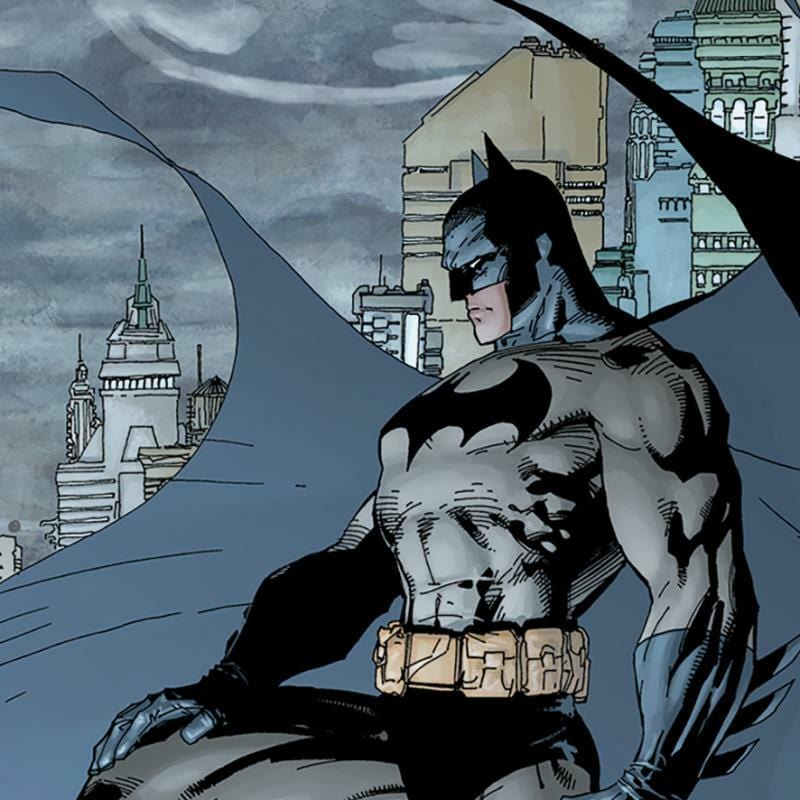
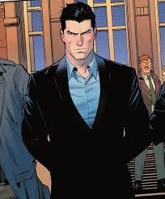

Who Is Batman?
Batman is a hero shaped by tragedy, using his pain to drive his mission to protect Gotham City. After witnessing the death of his parents, he dedicated his life to mastering every skill needed to fight crime. Through intense training, he became one of the world’s greatest martial artists and detectives. He uses fear as a powerful tool, turning the symbol of a bat into something criminals dread. Despite having no superhuman abilities, his determination and discipline make him stand alongside gods and aliens. Batman represents justice, strategy, and the unbroken will of a man who refuses to surrender.

Batman’s Mission
Batman’s mission is built on the promise he made as a child: to ensure no one experiences the pain he did. To achieve this, he studies criminal psychology, tracks patterns, and understands how criminals think. He works from the shadows, using stealth and strategy instead of brute force. His gadgets help him stay one step ahead of enemies, preparing him for nearly any situation. He relies on precision, patience, and morality to guide his actions through Gotham’s darkest nights. Above all, he fights not just to punish criminals, but to protect the innocent.
